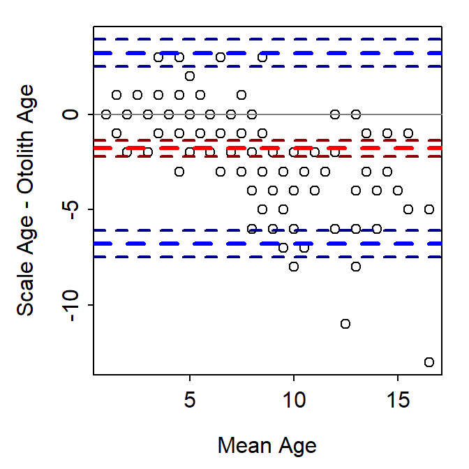
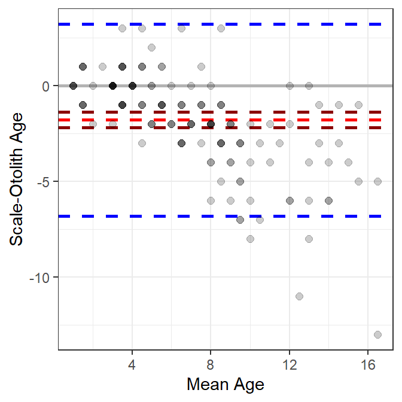
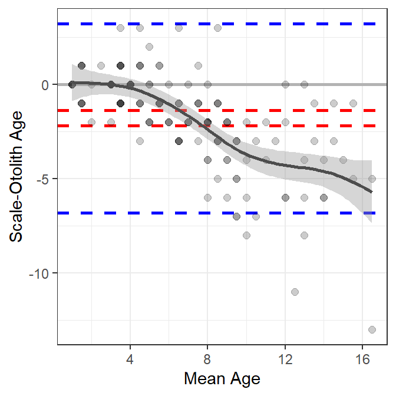
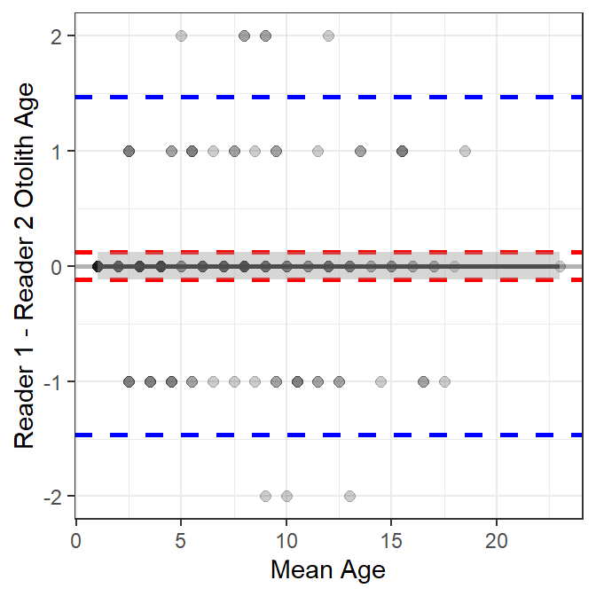

library(FSA) ## for WhitefishLC, headtail()
library(dplyr) ## for mutate()
library(ggplot2)
library(BlandAltmanLeh) ## for bland.altman.plot()
library(mgcv)
theme_set(theme_bw())
Note
The following packages are loaded for use below. I also set the default ggplot theme to theme_bw() for a classic “black-and-white” plot (rather than the default plot with a gray background).
Introduction
In this post, I describe the Bland-Altman plot, demonstrate how to construct it in R, give a mild critique of its use for comparing fish age estimates, and develop an alternative that is meant to address my critique. This is largely a “thinking out loud” exercise so I am open to suggestions you may have.
The WhitefishLC data frame from FSA.1 contains age readings made by two readers on scales, fin rays, and otoliths, along with consensus readings for each structure. These data will be used throughout this post.
1 These data are loaded automatically with library(FSA).
headtail(WhitefishLC)#R| fishID tl scale1 scale2 scaleC finray1 finray2 finrayC otolith1 otolith2
#R| 1 1 345 3 3 3 3 3 3 3 3
#R| 2 2 334 4 3 4 3 3 3 3 3
#R| 3 3 348 7 5 6 3 3 3 3 3
#R| 149 214 599 14 16 15 14 14 14 16 16
#R| 150 216 636 8 10 9 10 8 10 15 15
#R| 151 218 551 5 7 6 6 9 8 13 13
#R| otolithC
#R| 1 3
#R| 2 3
#R| 3 3
#R| 149 16
#R| 150 15
#R| 151 13Bland-Altman Plot
The Bland-Altman plot (Bland and Altman 1986) is commonly used in medical and chemistry research to assess agreement between two measurement or assay methods (Giavarina 2015). McBride (2015) used the Bland-Altman plot in his simulation study of the effects of accuracy and precision on the ability to diagnose agreement between sets of fish age estimates. McBride (2015) noted that Bland-Altman plots “readily depict both bias and imprecision” and that this was summarized for “the entire sample, rather than specific age classes.” Despite this, I am aware of only two entries in the fisheries literature that used the Bland-Altman plot to compare fish age estimates (one in the grey literature, one in a thesis). Below, I describe the Bland-Altman plot and then offer a modified version for comparing estimates of fish age.
The Bland-Altman plot is a scatterplot where the differences in two age estimates are on the y-axis and means of the two age estimates are on the x-axis. The plot may be augmented with several horizontal lines at the following locations (Figure 1):
- Zero,
- Mean difference in ages (heavy red dashed line),
- Upper and lower 95% confidence limits for the mean difference in ages (dark red dashed lines),
- Upper and lower 95% “agreement limits” (usually 1.96 times the standard deviation for the difference in ages above and below the mean difference in ages; heavy dashed blue lines), and
- Upper and lower 95% confidence limits for the upper and lower “agreement limits” (dashed dark blue lines).

BlandAltmanLeh.
As a general rule, a 95% confidence interval for the mean difference that does not contain zero suggests a difference (or a bias) between the two age estimates. For example, a bias is evident in Figure 1. In addition, one would expect 95% of the points to fall within the “agreement limits.” Points that fall outside this range may be considered further as possible outliers. Log differences have been used if the differences are not normally distributed and the percentage difference (where the difference is divided by the mean age) have also been used (Giavarina 2015).
The Bland-Altman plot in Figure 1 was created with bland.altman.plot() from the BlandAltmanLeh package (Lehnert 2015b). Other R functions exist for creating Bland-Altman plots (or the equivalent “Tukey’s Mean Difference Plot”). However, I demonstrate below how to construct this plot from “scratch.”
Constructing a Bland-Altman Plot
In this example, a Bland-Altman plot is created to compare consensus (between two readers) scale (scaleC) and otolith (otolithC) age estimates for Lake Champlain Lake Whitefish. For simplicity, I restrict (using select()) the data frame below to just these two variables plus fishID and tl. In addition, for making the plot the mean and differences between the two age estimates are added the data frame (using mutate()).
wfSO <- WhitefishLC |>
select(fishID,tl,scaleC,otolithC) |>
mutate(meanSO=(scaleC+otolithC)/2,
diffSO=scaleC-otolithC)
headtail(wfSO)#R| fishID tl scaleC otolithC meanSO diffSO
#R| 1 1 345 3 3 3.0 0
#R| 2 2 334 4 3 3.5 1
#R| 3 3 348 6 3 4.5 3
#R| 149 214 599 15 16 15.5 -1
#R| 150 216 636 9 15 12.0 -6
#R| 151 218 551 6 13 9.5 -7A data frame of summary statistics is also needed. Below the sample, mean, standard deviation, and standard error for the differences is ages are calculated and then approximate 95% confidence limits for the differences (i.e., using the SE) and agreement limits (i.e., using the SD) are added.
sumSO <- wfSO |>
summarize(n=n(),
mean=mean(diffSO,na.rm=TRUE),
sd=sd(diffSO,na.rm=TRUE),
se=se(diffSO,na.rm=TRUE)) |>
mutate(lwrci=mean-1.96*se,
uprci=mean+1.96*se,
lwrag=mean-1.96*sd,
uprag=mean+1.96*sd)
sumSO#R| n mean sd se lwrci uprci lwrag uprag
#R| 1 151 -1.781457 2.553152 0.2077726 -2.188691 -1.374223 -6.785636 3.222722The Bland-Altman plot can then be constructed in layers using ggplot() (Figure 2). Horizontal lines at zero, the mean difference, confidence limits for the mean difference, and the agreement limits are added with geom_hline() using yintercept= to denoted the location of the line and varying colors (with color=), line widths (with linewidth=), and line types (with linetype=). geom_point() is then used to add the observed differences in ages at the mean age as points that are slightly transparent such that as more points are plotted on top of each other the apparent point becomes darker. Finally, labels are provided for the x- and y-axes.
ggplot(data=wfSO,mapping=aes(x=meanSO,y=diffSO)) +
geom_hline(yintercept=0,color="gray70",linewidth=1) +
geom_hline(yintercept=sumSO$mean,
color="red",linewidth=1,linetype="dashed") +
geom_hline(yintercept=c(sumSO$lwrci,sumSO$uprci),
color="darkred",linewidth=1,linetype="dashed") +
geom_hline(yintercept=c(sumSO$lwrag,sumSO$uprag),
color="blue",linewidth=1,linetype="dashed") +
geom_point(col=col2rgbt("black",1/5),size=2) +
scale_x_continuous(name="Mean Age") +
scale_y_continuous(name="Scale-Otolith Age")
ggplot.
A Critique of the Bland-Altman Plot for Age Comparisons
I like that Bland-Altman plots (relative to age bias plots) do not require that one of the variables be designated as the “reference” group. This may be more useful when comparing age estimates where one set of estimates is not clearly a priori considered to be more accurate (e.g., comparing readers with similar levels of experience).
However, I don’t like the following characteristics of (default) Bland-Altman plots.
- There may be considerable overlap of the plotted points because of the discrete nature of most age data. Various authors have dealt with this by adding a “petal” to the point for each overplotted point to make a so-called “sunflower plot” (Lehnert 2015a) or using bubbles that are proportional to the number of overplotted points (McBride 2015). However, I find the “sunflowers” and “bubbles” to be distracting. I addressed this issue with transparent points above.
- The “agreement lines” are not particularly useful. They may be useful for identifying outliers, but an egregious outlier will likely stand out without these lines.
- The single confidence interval for the mean difference suggests that any bias between the sets of estimates is “constant” across the range of mean ages. This can be relaxed somewhat if the percentage difference is plotted on the y-axis. However, neither of these allows for more complex situations where the bias is nonlinear with age. For example, a common situation of little difference between the estimates at young ages, but increasing differences with increasing ages (e.g., Figure 2) is not well-represented by this single confidence interval.
A Modified Bland-Altman Plot for Age Comparisons
The third issue above has been addressed with some Bland-Altman plots by fitting a linear regression that describes the difference in age estimates as a function of mean age (Giavarina 2015). However, this only allows for a linear relationship, which may not represent or reveal more interesting nonlinear relationships. A “smoother” (a loess or a generalized additive model (GAM)) could be used to estimate a “smoothed” potentially nonlinear relationship between the differences in ages and the means of the ages. For example, a GAM smoother is added to Figure 2 with geom_smooth() below.2
2 geom_smooth() defaults to a loess smoother when n<1000 points. Use method="gam" to force using a GAM smoother. I use the GAM smoother for the hypothesis testing shown at the bottom of this section.
ggplot(data=wfSO,mapping=aes(x=meanSO,y=diffSO)) +
geom_hline(yintercept=0,color="gray70",linewidth=1) +
geom_hline(yintercept=c(sumSO$lwrci,sumSO$uprci),
color="red",linewidth=1,linetype="dashed") +
geom_hline(yintercept=c(sumSO$lwrag,sumSO$uprag),
color="blue",linewidth=1,linetype="dashed") +
geom_point(col=col2rgbt("black",1/5),size=2) +
scale_x_continuous(name="Mean Age") +
scale_y_continuous(name="Scale-Otolith Age") +
geom_smooth(method="gam",color="gray30")
These results suggest that there is little difference between scale and otolith age estimates up to a mean age estimate of approximately five, after which age estimates from scales are less than age estimates from otoliths, with the difference between the two generally increasing with increasing mean age (Figure 3).
A similar plot is shown for the comparison of otolith age estimates between two readers in Figure 4. Also note (see below) that the smoother term is not significant for the between-reader comparison of otolith age estimates, which suggests no relationship between the differences in ages and the mean age. In addition, the intercept term is not significantly different from zero, which indicates that there is not a constant bias between the two readers.

Hypotheses about the relationship between the difference in ages and the mean age can be tested with the GAM smoother model. The first line below fits the GAM smoother model used by geom_smooth(). First note that gam() is from the mgcv package and is preceded by mgcv:: so as not to load the whole package. The formula in gam has the difference in ages on the left side and a smoother term (denoted with the s() on the right side. The smoother funtion contains the mean aes and bs="cs" (to force using the same algorithm as geom_smoother()). The saved object is the submitted to summary() to get, among other things, hypothesis test results about the significance of the smoother term.
gamSO <- mgcv::gam(diffSO~s(meanSO,bs="cs"),data=wfSO)
summary(gamSO)#R|
#R| Family: gaussian
#R| Link function: identity
#R|
#R| Formula:
#R| diffSO ~ s(meanSO, bs = "cs")
#R|
#R| Parametric coefficients:
#R| Estimate Std. Error t value Pr(>|t|)
#R| (Intercept) -1.7815 0.1473 -12.1 <2e-16
#R|
#R| Approximate significance of smooth terms:
#R| edf Ref.df F p-value
#R| s(meanSO) 8.044 9 17.14 <2e-16
#R|
#R| R-sq.(adj) = 0.498 Deviance explained = 52.4%
#R| GCV = 3.4842 Scale est. = 3.2755 n = 151The p-value for the significance of the smoother term (i.e., whether it adds significantly to the model or not) is <2e-16 as found under “Approximate significance of smooth term:”. This indicates that the smoother term is important to the model and that mean difference in age depends on the mean age. Thus, the difference in ages is not the same for all mean ages.
A similar table for the comparison of otolith ages between two readers shows that the smoother term is not significant (0.958); thus, the difference in otolith ages does not depend on the mean age. In addition, the intercept term for the model is not significantly different from 0 (1.000), which along with the result about the smoother, suggests that the mean difference in ages is 0 regardless of the mean otolith age.
#R|
#R| Family: gaussian
#R| Link function: identity
#R|
#R| Formula:
#R| diffOO ~ s(meanOO, bs = "cs")
#R|
#R| Parametric coefficients:
#R| Estimate Std. Error t value Pr(>|t|)
#R| (Intercept) -2.443e-18 6.090e-02 0 1
#R|
#R| Approximate significance of smooth terms:
#R| edf Ref.df F p-value
#R| s(meanOO) 4.368e-10 9 0 0.958
#R|
#R| R-sq.(adj) = -2.79e-12 Deviance explained = 1.26e-11%
#R| GCV = 0.56373 Scale est. = 0.56 n = 151
References
Bland, J. M., and D. G. Altman. 1986. Statistical methods for assessing agreement between two methods of clinical measurement. Lancet i:307–317.
Giavarina, D. 2015. Understanding Bland Altman analysis. Biochemia Medica 25(2):141–151.
Lehnert, B. 2015a. What’s the main idea behind Bland-Altman plots?
Lehnert, B. 2015b, December. BlandAltmanLeh: Plots (Slightly Extended) Bland-Altman Plots.
McBride, R. S. 2015. Diagnosis of paired age agreement: A simulation of accuracy and precision effects. ICES Journal of Marine Science 72(7):2149–2167.
Reuse
Citation
BibTeX citation:
@misc{h.ogle2017,
author = {Derek H. Ogle},
title = {Bland-Altman {Plot} for {Age} {Comparisons?}},
date = {2017-04-20},
url = {https://fishr-core-team.github.io/fishR//blog/posts/2017-4-20_BlandAltman},
langid = {en}
}
For attribution, please cite this work as:
Derek H. Ogle. 2017, April 20. Bland-Altman
Plot for Age Comparisons?